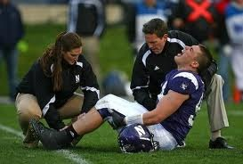

Year round participation in sports are causing children to experience more injuries. Most youth athletes used to play multiple sports, which prevented injuries in the long run. Currently, many youth athletes play one sport, which can cause children to experience overuse injuries. Overuse injuries typically start off small and can seem insignificant. Overtime, these minor issues can turn into serious injuries if they are not dealt with in time.
